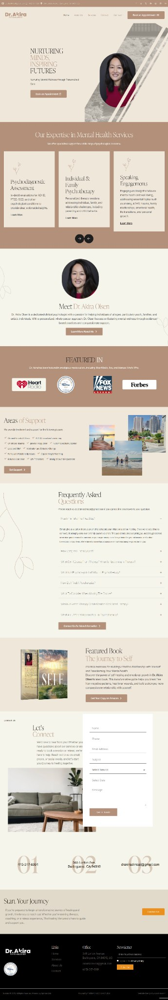

The challenge

← Back to Work
Mental health · Booking
Dr. Akira
For a mental-health website, trust has to arrive before the booking button feels appropriate.
Platform usedWordPress
Project typeMental health · Booking
The story behind the build
For this kind of service, trust had to arrive before the booking button.
The Dr. Akira project needed to balance professional authority with an experience that did not feel cold or clinical. A visitor may be ready to learn, but not necessarily ready to book the second the page loads.
I structured the WordPress experience so the expertise and service context come first, while appointments remain easy to find throughout the journey.
That sequence allows a prospective client to build confidence at their own pace and reach the booking decision with more context.
What I changed
- Show professional trust early without making the page feel clinical or cold.
- Explain services before asking for an appointment.
- Keep the booking path visible throughout the experience.
- Use a clear content sequence so visitors can move at their own pace.
Where it ended